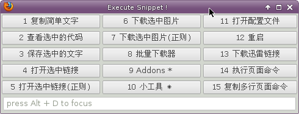

EasyScripts¶
| Release: | 0.1 |
|---|---|
| Date: | August 29, 2012 |
EasyScripts？¶
easyscripts是一个firefox扩展。
将js,coffee脚本放置于指定的目录。依据规范，可生成相应的功能菜单。
主要特色¶
即时脚本¶
脚本不会被firefox缓存。也就是说是即时生效的。
菜单界面¶
如果根据规范，easyscript可以更具描述自动生成调用菜单。

兼容coffeescript¶
可以自动编译coffeescripts脚本。
命名空间规范¶
脚本目录¶
默认的脚本目录位于 $home/easyscripts.
全局级别¶
全局级别的脚本。可以相互访问,可以被匿名脚本访问。放置于默认脚本目录下的 global 目录
以下面的脚本为例： 脚本中的 easyscript_app 对象会被放置于 window.easyscript_app 。
当然你也可以起其他的名字。但 easyscript_xxxx 风格的变量会有一个优化。在匿名脚本中可以直接通过xxxx访问
EXPORT = [easyscript_app]
easyscript_app =
get_os : ->Services.appinfo.OS
匿名级别¶
匿名级别的脚本，相互间是独立隔绝的。可以放置于默认脚本目录。
以下面的脚本为例: 这个脚本会转化成一个对象，被放置于 window.snippet.anonym.脚本ID 。
注意： app.get_os() 实质上调用的是上面的 easyscript_app 里的方法。
EXPORT = [__customMenus, test]
__customMenus =
"test":"无限菜单演示.L2.L3.L4.test"
test = ->alert app.get_os()
更多示例Demo¶
通过git获取项目，在scriptdemo目录下有一些实用的demo，并附有必要的注释说明easyscript的特性
安装下载¶
依赖¶
coffeescript
js解释器.
建议使用mozilla的spidermonkey. 理由是mozilla的js有一些非ES标准的语法。
archlinux如下安装
>>> pacman -S js
下载仓库¶
>>> git clone git@github.com:riptide766/easyscripts.git
生成和安装fireofox扩展¶
>>> cd easyscripts
>>> ./packaging.py
>>> firefox xxxxx.xpi
使用示例脚本¶
>>> cp -R scriptdemo ~/easyscripts
使用¶
- 重启firefox
- Ctrl + e 调出界面
扩展参数¶
可通过 about:config 访问修改
pref("extensions.easyscripts.cmd_sh", "/bin/sh");
pref("extensions.easyscripts.cmd_coffee", "/usr/bin/coffee");
pref("extensions.easyscripts.cmd_js", "/usr/bin/js");
pref("extensions.easyscripts.pattern_compile_js", "%1 -C %2 2> %3");
pref("extensions.easyscripts.pattern_compile_coffee", "%1 -c %2 2> %3");
pref("extensions.easyscripts.log_error", "/tmp/easyscript_errorlog");
pref("extensions.easyscripts.alert_compile_err", false);
pref("extensions.easyscripts.script_dir", "Home,easyscripts");